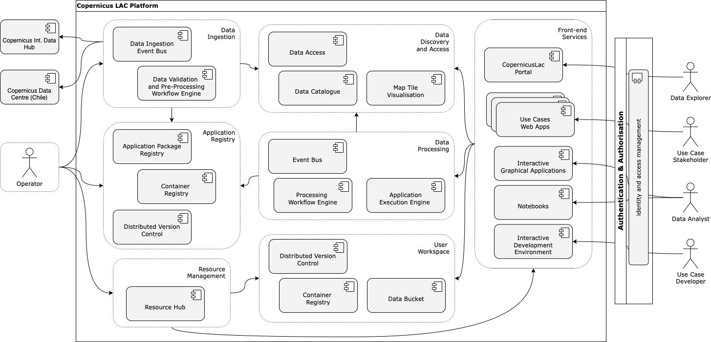

D2 · System Architecture Description · Capítulo 3.5.3
Integration Points
Se apoya en el espacio de trabajo, descubrimiento y acceso, procesamiento, registro de aplicaciones, servicios de seguridad y gestión de recursos.
pp. 29–301 fig.
The Front-end Services integrate with multiple other components within the CopernicusLAC platform to provide a cohesive user experience:
- User Workspace: The front-end services interact with the User Workspace to access data, execute processing tasks, and retrieve results. This integration allows users to manage their data and tasks through the front-end interfaces.
- Data Discovery and Access Component: Enables users to search and retrieve EO data. The front-end services provide interfaces for users to explore and visualise this data. Visualisation clients within the front-end services access the Titiler backend here for dynamic map tile generation.
- Data Processing Component: Allows users to submit processing jobs and monitor their progress. The front-end services provide interfaces for defining processing tasks and viewing results.
- Application Registry: Facilitates the deployment and execution of application packages. The front-end services provide interfaces for users to select and manage applications from the registry.
- Security Services: Integrates with authentication and authorization services to ensure secure access to the platform’s resources.
- Resource Management: Coordinates with the resource management component to ensure that front-end services are properly instantiated, configured, and maintained.
